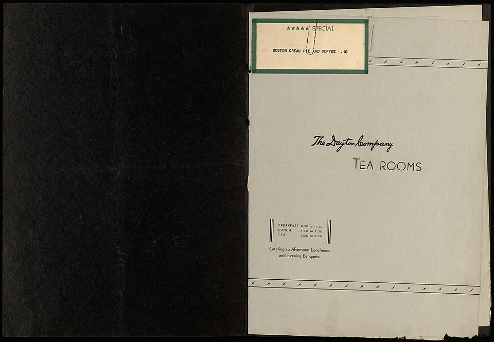

1910 · Fannie Merritt Farmer · BEVERAGES
How to Make Tea
The Boston Cooking-School Cook Book
❧ ───── ❦ ───── ❧

Historical Recipe
The following text is extracted from the 1910 edition, retaining historical terminology and quantities.
Original Ingredients & Directions
3 teaspoons tea
2 cups boiling water
Scald an earthen or china teapot.
Put in tea, and pour on boiling water. Let stand on back of range or in a warm place five minutes. Strain and serve immediately, with or without sugar and milk. Avoid second steeping of leaves with addition of a few fresh ones. If this is done, so large an amount of tannin is extracted that various ills are apt to follow.
Automatically extracted transcription; editorial verification pending. Historical instructions may not meet modern food-safety standards.